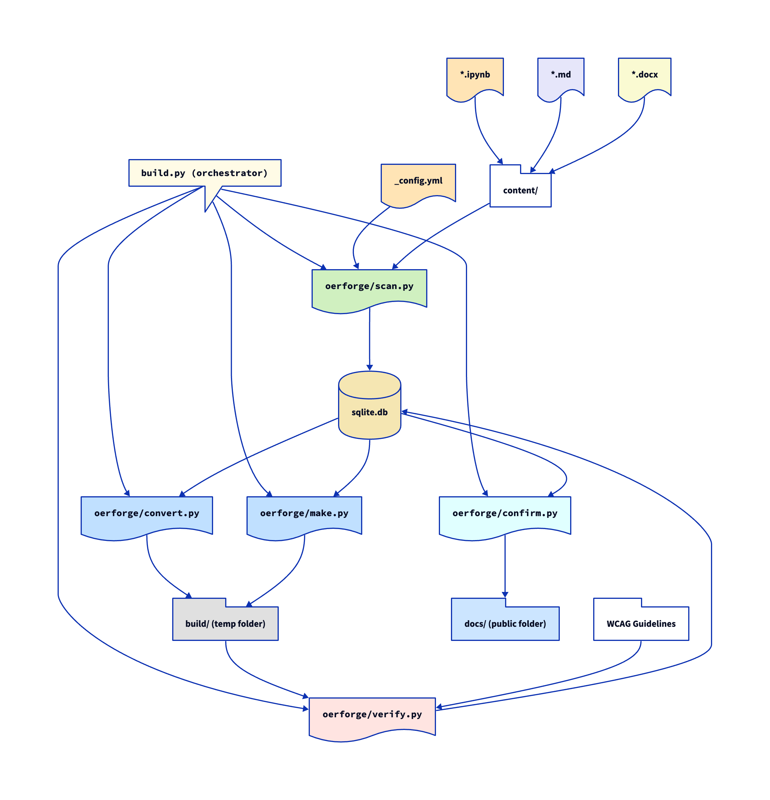

OER-Forge is a Python package with five modules (oerforge/):
scan.py- uses_config.ymland the files present incontent/to populate an sqlite database with site and file info.convert.py- draws fromsqlite.dbto convert files incontent/and places them inbuild/files/preserving the user's file structuremake.py- draws fromsqlite.dbto builds a temporary WCAG compliant site inbuild/.verify.py- reviewsbuild/in the context of WCAG Guidelines to generate a report and update pages on the site indicating level of compliance.confirm.py- integrates the WCAG reporting information into the site and rebuilds as a public site indocs/
Orchestration
OER-Forge uses build.py to orchestrate the build process.
- build.py - uses functions from each module to construct the build in build/
Overview of the Build Process
The following diagram illustrates the envisioned build process:
- Starting with the
content/directory and_config.yml,scan.pypopulatessqlite.db. This includes metadata about the site and the files to be processed as well as their locations. Figures and images are also identified and catalogued. This is functional. convert.pyreads fromsqlite.dbto convert files incontent/to their appropriate formats, placing them inbuild/files/while preserving the user's file structure. The tools inconvert.pycurrently support conversion of Jupyter Notebooks (.ipynb) to Markdown (.md) and Word (.docx), and will be extended to support additional formats. The moduleconvert.pyuses the file extensions to determine the appropriate conversion tools and which formats to convert to (i.e., it will not attempt to convert a.mdfile to.mdor a.docxfile to.ipynb). This is partially functional.make.pyreads fromsqlite.dbto build a temporary WCAG compliant site inbuild/. This is not yet functional.verify.pyreviewsbuild/in the context of WCAG Guidelines to generate a report and update pages on the site indicating level of compliance. This is not yet functional.confirm.pyintegrates the WCAG reporting information into the site and rebuilds as a public site indocs/. This is not yet functional.
